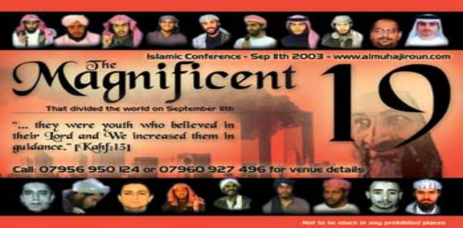

|
|
||||
|
Replying to Mushfiq, an Educated Islam Follower Imran
Hossain 27
October 2004 Dear
Mushfiq, I
did not have any chance to read any of your writings so far. But miraculously
one of your articles in Vinnomot drew
me an attention, “Vul pothe shotter shondhan.” This actually has made me
reply you to show the true way indeed.
I do apologise that my essay is lengthy, and I cannot write good Bangla, so I
have to write in English. I do not have time to reply the whole essay. But I
am trying to write as much as I can. But do
not think that your rest words (that are unanswered) beat me. Anyway
let me now begin. You accuse that the media make the people blame the Muslims,
and the Muslims hate Kaffirs. This is ridiculous indeed. Listen you are an ignorant
Muslim that is why you do not hate Kaffirs. Most Muslims are ignorant like
you. That is why they are decent. But those who fully follow their prophet
become terrorists. My suggestion is - please do not try to follow Mohamed. If so, you will
end up your rest life in the jail (maybe in Guantanamo Bay). Now see why
Islamists or pure Muslims (not ignorant like you) hate Kaffirs and the world
now starts realising that Islam makes you folks
hate unbelievers. Here are some of the sample verses from Allah’s book I
have produced to keep the reply short. 003.028
Let
not the believers take the unbelievers
for friends rather than believers; and whoever does this, he shall have
nothing of (the guardianship of) Allah, but you should guard yourselves
against them, guarding carefully; and Allah makes you cautious of (retribution
from) Himself; and to Allah is the eventual coming. 004.084
Fight then in Allah's way;
this is not imposed on you except In relation to yourself, and rouse the
believers to ardor maybe Allah will
restrain the fighting of those who disbelieve and Allah is strongest in
prowess and strongest to give an exemplary punishment. 008.012
When your Lord revealed to
the angels: I am with you, therefore make firm those who believe. I
will cast terror into the hearts of those who disbelieve. Therefore strike off their heads and strike off every fingertip of them. 009.023
O you who believe! do
not take your fathers and your brothers for guardians if they love unbelief
more than belief; and whoever of you takes them for a guardian, these it
is that are the unjust. 009.029
Fight
those who do not believe in
Allah, nor in the latter day, nor do they prohibit what Allah and His
Messenger have prohibited, nor follow the religion of truth, out of those who
have been given the Book, until they pay the tax in acknowledgment of
superiority and they are in a state of subjection. 009.073
O Prophet! strive
hard against the unbelievers and the hypocrites and be unyielding to them;
and their abode is hell, and evil is the destination. 025.052
So
obey not the disbelievers,
but strive against them herewith with a great endeavour. Now tell me - do you practise these? You are ignorant
of Islam. So you do not. That is why you are a gentleman. But some people who
are called “terrorists” find the manual of their daily responsibilities
from Allah’s gifted book. You
now claim that 11 September is not an Islamic attack. Actually
the mindsets of Muslims or Islamists vary from place to place. Islamists or
Muslims in the West think that Mr Bin Laden is not a good Muslim and also 11
September was not an Islamic attack. On the other
hand, most Muslims and Islamists in Darul Islam (the land of Islam) think that
11 September was a due punishment for USA, and
Mr Bin Laden did it and he is a great hero to
them. As a Muslim living in the West, go to any Islamic countries and talk
about Laden that he is not a good
Muslim. You will be heard right way that the Kaffir West has made you a faulty Muslim, and you might even be beaten or killed for
misinterpretation. Read
Mr Bin Laden’s opinion: http://www.islam.com/reply.asp?id=376098&ct=6&mn=376098
first. The
pure Muslims around the world call them “The Magnificent 19.” See
carefully the real Islam practitioners of the 21st century.
 The high bragging of Arabic
Muslims, Islamic terrorists, Mullahs, Mr Bin Laden, and faithful Muslims in 57
Islamic countries do not even response you at all that Laden planned 11
September? What world do you live? You
like to refute an ayah of a Surah (9:5) that was raised by an US girl Gina!
Please read here: http://www.faithfreedom.org/Articles/sina41019.htm
for the answer. If anything is wrong, show me words by “quoting.” You
obviously think that the world blames Islamic brothers for everything. And you
now find conspiracy behind everything. Actually Islam needs enemies.
Without enemies Islam cannot survive because Islam is a religion of
hate. Hate needs enemy to exist. From the time of Islam’s birth,
it is producing “enemy” one by one. Mr Mushfiq, please open your eyes.
Nowadays 99% of terror acts are done by the Islamic militants. And they take
the responsibility right away for their heinous acts. They find the true
justification from the Holy Koran and Ahadith. Moderate Muslims like you find the justification of living in the Kaffir
lands for a better life, but the pure Muslims (terrorists) find the
justification of getting 72 virgin girls for their unlimited sex in heaven! If
there are bunch of Islamic terrorists in the world, so who do you think the
media should blame? Do you want to blame the Jews
or Hindus for the crimes done by the Islamic brothers?
Now you will come with a poor excuse that the media are run by
Jews, so they always want to kill Islam. Listen, Islam
has survived so far by force and killing its critics. The truth comes out
because of the blessing of Internet. We seculars now can reveal the truth safely behind the
computer screens. You people have no more time to hide the truth of Islam Can
you now show me hundreds of Jihadi Organisations like Horkatul Jihad, Hamas, Tawhid
& Jihad etc exit
in other religions? Can you show me some Hindus and Jews who kill innocent
people in the name of their gods holding their holy books? Do they cross their
own countries to kill innocent people? You can brag out like a baby dick that
the western media do not say the truth. Listen there are also many Islamic
media. So can you find criminals like
Islamic brothers from other religions or atheist groups, even from the Islamic
media? You will never find criminals that Islam produces. You have no
place to sacrifice the truth. You people no longer have any chance to blame the Kaffirs for the
crimes done by the Muslims. You
might try to live in KSA or Iran to taste Islam. You obviously live in
ignorant Islamic countries like Bangladesh or in the Kaffir West with much
of western comforts and services. You have customised Islam as you like.
But you do not understand what the real Islam is. You will understand Islam in
KSA when you get lashings (dorrahs) on your bottom for not praying outside
home. You will understand Islam when your hands and feet are chopped
off for a theft case (as
an example, you are innocent, but you
have been charged a false case of theft. You will now lose your arms and feet
according to Islamic law. If you had lived outside the Islamic rules, you
would have a cash penalty or imprisonment for a few years at the most. But you
would not at least be a disable for life by losing your arms and feet.)
This is Islam. Islam is a cult of an evil person. Mohamed was not a prophet. He lied to the people. A careful of study of the Koran and Ahadiths reveal the truth. We secular have driven out evils from us by knowledge. But Prophet Mohamed was touched by evils (Satan) (Volume 4, Book 54, Number 506: Narrated Abu Huraira: The Prophet said, "When any human being is born. Satan touches him at both sides of the body with his two fingers, except Jesus, the son of Mary, whom Satan tried to touch but failed, for he touched the placenta-cover instead." ). That is why Mohamed could not remove evils from his shoulder, so he was a killer, liar, lady-killer, paedophilia, and psychopath. You should at least now recognise the founder of Islam and the real Islam. Do
not get wasted. Life is too short. Do not jump on ignorance. Start seeking the
truth. Start loving all people. I am not asking you to be an atheist. And I do
not have any intention to make the world atheist. If you want to choose to go
with a religion, please choose any other. Or if you want to believe in God,
you can still believe in Him without any religion. You will at least have
humanity, so the growths of Islam (hate and terrorism) will at least lose one
support from you. Even if you prefer to be a Muslim, I still honour you. But I
have at least told the truth. ---------- Please
Click Here
to Read My Past Articles
|
||||